Random Forest Classifier - Analisis Dataset IRIS#
Perbandingan KNIME: Random Forest vs Decision Tree#
1. Konsep Dasar Random Forest#
Random Forest adalah algoritma ensemble learning yang membangun banyak Decision Tree secara paralel dan menggabungkan hasilnya.
Komponen |
Penjelasan |
|---|---|
Ensemble |
Menggabungkan banyak model untuk meningkatkan akurasi |
Bagging |
Bootstrap Aggregating - setiap tree dilatih dengan subset data acak |
Random Feature Selection |
Setiap split hanya mempertimbangkan subset fitur acak |
Voting |
Hasil akhir ditentukan oleh mayoritas vote dari semua tree |
Keunggulan vs Decision Tree:#
Lebih tahan terhadap overfitting
Lebih akurat - ensemble mengurangi variance
Robust terhadap noise dan outlier
Dapat menangani dataset besar dengan banyak fitur
2. Import Library & Load Data#
import pandas as pd
import numpy as np
import matplotlib.pyplot as plt
import seaborn as sns
import warnings
from sklearn.ensemble import RandomForestClassifier
from sklearn.metrics import classification_report, confusion_matrix, accuracy_score
warnings.filterwarnings('ignore')
try: plt.style.use('seaborn-v0_8-whitegrid')
except:
try: plt.style.use('seaborn-whitegrid')
except: pass
plt.rcParams['figure.figsize'] = (10, 6)
plt.rcParams['font.size'] = 12
print('Library berhasil di-import!')
Library berhasil di-import!
df = pd.read_csv('data/IRIS.csv')
print(f'Dataset: {df.shape[0]} baris x {df.shape[1]} kolom')
print(f'\nDistribusi kelas:\n{df["species"].value_counts()}')
df.head()
Dataset: 150 baris x 5 kolom
Distribusi kelas:
species
Iris-setosa 50
Iris-versicolor 50
Iris-virginica 50
Name: count, dtype: int64
| sepal_length | sepal_width | petal_length | petal_width | species | |
|---|---|---|---|---|---|
| 0 | 5.1 | 3.5 | 1.4 | 0.2 | Iris-setosa |
| 1 | 4.9 | 3.0 | 1.4 | 0.2 | Iris-setosa |
| 2 | 4.7 | 3.2 | 1.3 | 0.2 | Iris-setosa |
| 3 | 4.6 | 3.1 | 1.5 | 0.2 | Iris-setosa |
| 4 | 5.0 | 3.6 | 1.4 | 0.2 | Iris-setosa |
Visualisasi Data#
fig, axes = plt.subplots(2, 2, figsize=(14, 10))
features = ['sepal_length', 'sepal_width', 'petal_length', 'petal_width']
colors = {'Iris-setosa': '#e74c3c', 'Iris-versicolor': '#2ecc71', 'Iris-virginica': '#3498db'}
for i, feat in enumerate(features):
ax = axes[i//2][i%2]
for sp in df['species'].unique():
ax.hist(df[df['species']==sp][feat], alpha=0.6, label=sp, color=colors[sp], bins=15)
ax.set_title(f'Distribusi {feat}', fontweight='bold'); ax.legend(fontsize=8)
plt.suptitle('Distribusi Fitur Dataset IRIS', fontsize=16, fontweight='bold')
plt.tight_layout(); plt.show()
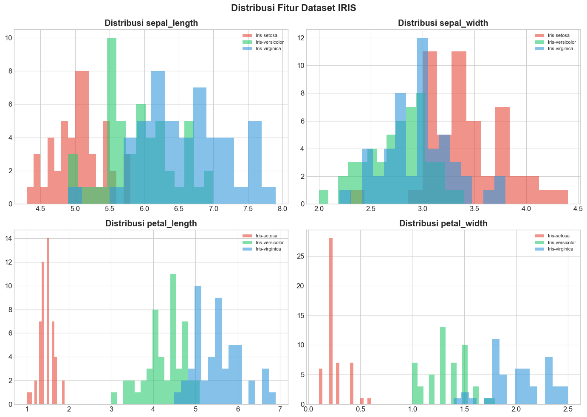
3. Workflow KNIME#
Berikut adalah workflow KNIME yang digunakan untuk membandingkan Random Forest, Decision Tree, dan Python Script pada dataset IRIS.
Workflow KNIME:#
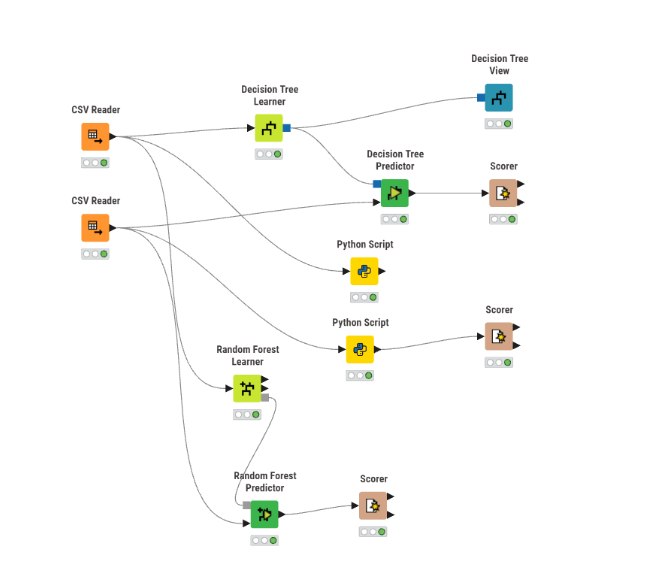
Workflow terdiri dari 3 branch:
Decision Tree Learner -> Decision Tree Predictor -> Scorer
Python Script (Training) -> Python Script (Prediksi) -> Scorer
Random Forest Learner -> Random Forest Predictor -> Scorer
4. Script Python di KNIME#
4.1 Script Training (Python Script Node 1)#
Script berikut digunakan di node Python Script pertama untuk melatih model Random Forest dan menyimpannya menggunakan joblib:
import knime.scripting.io as knio
import pandas as pd
from sklearn.ensemble import RandomForestClassifier
import joblib
# 1. Ambil data training dari node KNIME Partitioning
data = knio.input_tables[0].to_pandas()
nama_kolom_target = 'species'
# 2. Pisahkan fitur (X) dan target (y)
X_train = data.drop(nama_kolom_target, axis=1)
y_train = data[nama_kolom_target]
# 3. Inisialisasi dan latih Model Random Forest
print("Training the model...")
model = RandomForestClassifier(n_estimators=100, random_state=43)
model.fit(X_train, y_train)
print("Model training complete.")
# 4. Menyimpan Model menggunakan Joblib
joblib_filename = 'D:\Application\knime-workspace/rf_model_iris.joblib'
print(f"Saving model to {joblib_filename} using joblib...")
joblib.dump(model, joblib_filename)
print("Model saved successfully with joblib.")
# Output status ke KNIME
knio.output_tables[0] = knio.Table.from_pandas(pd.DataFrame({"Status": [f"Model tersimpan di {joblib_filename}"]}))
4.2 Script Prediksi (Python Script Node 2)#
Script berikut digunakan di node Python Script kedua untuk memuat model dan melakukan prediksi:
import knime.scripting.io as knio
import pandas as pd
import joblib
# 1. Ambil data testing dari node KNIME Partitioning
data_test = knio.input_tables[0].to_pandas()
nama_kolom_target = 'species'
# Siapkan data untuk diprediksi (buang kolom target dari fitur)
if nama_kolom_target in data_test.columns:
X_test = data_test.drop(nama_kolom_target, axis=1)
else:
X_test = data_test
# 2. Memuat Model menggunakan Joblib
joblib_filename = 'D:\Application\knime-workspace/rf_model_iris.joblib'
print(f"Loading model from {joblib_filename} using joblib...")
loaded_model_joblib = joblib.load(joblib_filename)
print("Model loaded successfully with joblib.")
# 3. Lakukan Prediksi
prediction = loaded_model_joblib.predict(X_test)
# 4. Tambahkan hasil prediksi sebagai kolom baru bernama 'Prediction'
data_test['Prediction'] = prediction
# 5. Kirim hasil kembali ke KNIME untuk dinilai oleh node Scorer
knio.output_tables[0] = knio.Table.from_pandas(data_test)
5. Implementasi Random Forest dengan Python#
Implementasi Python menggunakan parameter yang sama seperti script KNIME (n_estimators=100, random_state=43).
X = df[['sepal_length', 'sepal_width', 'petal_length', 'petal_width']]
y = df['species']
rf_model = RandomForestClassifier(n_estimators=100, random_state=43)
rf_model.fit(X, y)
rf_pred = rf_model.predict(X)
print('='*60)
print('RANDOM FOREST - HASIL PREDIKSI (150 data)')
print('='*60)
print(f'Jumlah Tree: {rf_model.n_estimators}')
print(f'Akurasi: {accuracy_score(y, rf_pred):.2%}')
============================================================
RANDOM FOREST - HASIL PREDIKSI (150 data)
============================================================
Jumlah Tree: 100
Akurasi: 100.00%
Confusion Matrix - Random Forest (Python)#
labels = sorted(y.unique())
cm_rf = confusion_matrix(y, rf_pred, labels=labels)
df_cm_rf = pd.DataFrame(cm_rf, index=labels, columns=labels)
df_cm_rf.index.name = 'Actual'; df_cm_rf.columns.name = 'Predicted'
print('CONFUSION MATRIX - Random Forest (Python):')
print(df_cm_rf)
print(f'\nAkurasi: {accuracy_score(y, rf_pred):.2%}')
fig, ax = plt.subplots(figsize=(8, 6))
sns.heatmap(df_cm_rf, annot=True, fmt='d', cmap='Greens', linewidths=2,
linecolor='white', annot_kws={'size':16,'weight':'bold'})
ax.set_title('Confusion Matrix - Random Forest (Python)', fontsize=14, fontweight='bold')
plt.tight_layout(); plt.show()
CONFUSION MATRIX - Random Forest (Python):
Predicted Iris-setosa Iris-versicolor Iris-virginica
Actual
Iris-setosa 50 0 0
Iris-versicolor 0 50 0
Iris-virginica 0 0 50
Akurasi: 100.00%
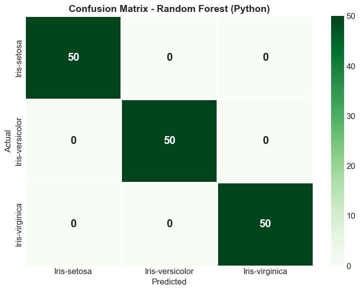
print('CLASSIFICATION REPORT - Random Forest (Python):')
print(classification_report(y, rf_pred))
CLASSIFICATION REPORT - Random Forest (Python):
precision recall f1-score support
Iris-setosa 1.00 1.00 1.00 50
Iris-versicolor 1.00 1.00 1.00 50
Iris-virginica 1.00 1.00 1.00 50
accuracy 1.00 150
macro avg 1.00 1.00 1.00 150
weighted avg 1.00 1.00 1.00 150
Feature Importance - Random Forest#
importances = rf_model.feature_importances_
feat_imp = pd.DataFrame({'Fitur': features, 'Importance': importances}).sort_values('Importance', ascending=False)
print('Feature Importance:'); print(feat_imp.to_string(index=False))
fig, ax = plt.subplots(figsize=(10, 6))
bars = ax.barh(feat_imp['Fitur'], feat_imp['Importance'], color=['#2ecc71','#3498db','#e74c3c','#f39c12'])
ax.set_xlabel('Importance', fontweight='bold')
ax.set_title('Feature Importance - Random Forest', fontsize=14, fontweight='bold')
for bar, val in zip(bars, feat_imp['Importance']):
ax.text(val+0.01, bar.get_y()+bar.get_height()/2, f'{val:.4f}', va='center', fontweight='bold')
plt.tight_layout(); plt.show()
Feature Importance:
Fitur Importance
petal_width 0.471449
petal_length 0.376176
sepal_length 0.125803
sepal_width 0.026572
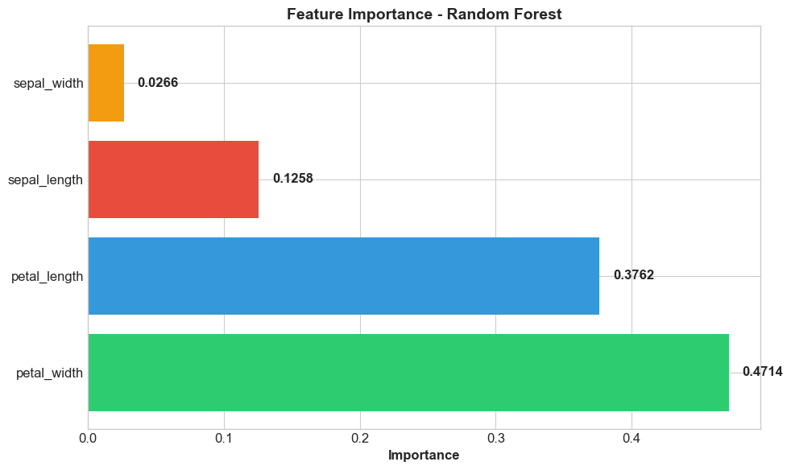
6. Hasil KNIME - Random Forest Learner#
Confusion Matrix (KNIME - Random Forest):#
Accuracy Statistics (KNIME - Random Forest):#
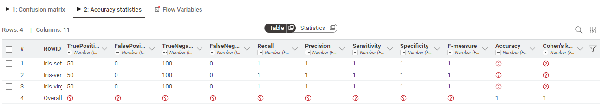
Hasil KNIME Random Forest:
Iris-setosa: TP=50, FP=0 -> Accuracy = 100%
Iris-versicolor: TP=50, FP=0 -> Accuracy = 100%
Iris-virginica: TP=50, FP=0 -> Accuracy = 100%
Overall Accuracy = 100%
Hasil Python Script di KNIME:#
Confusion Matrix (Python Script di KNIME):#
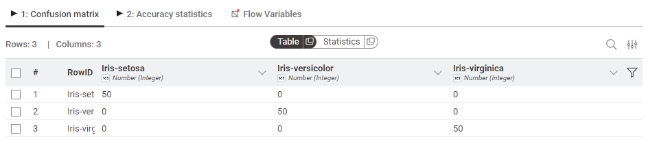
Accuracy (Python Script di KNIME):#
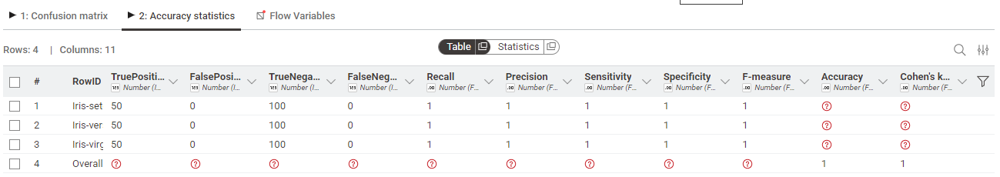
Hasil Python Script di KNIME juga menunjukkan akurasi 100%, konsisten dengan Random Forest Learner node.
7. Hasil KNIME - Decision Tree Learner#
Workflow Decision Tree:#
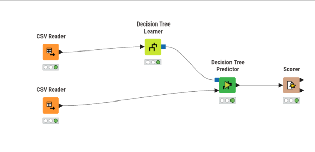
Confusion Matrix (KNIME - Decision Tree):#
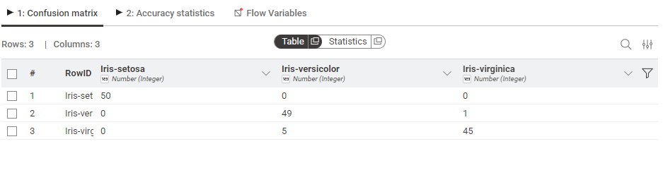
Accuracy Statistics (KNIME - Decision Tree):#

Hasil KNIME Decision Tree:
Iris-setosa: TP=50, FP=0 -> Precision=1.0, Recall=1.0
Iris-versicolor: TP=49, FP=5 -> Precision=0.907, Recall=0.98
Iris-virginica: TP=45, FP=1 -> Precision=0.978, Recall=0.9
Overall Accuracy = 96%
8. Perbandingan KNIME: Random Forest vs Decision Tree#
Berikut perbandingan hasil KNIME Random Forest Learner vs KNIME Decision Tree Learner pada dataset IRIS (150 data).
# Reproduksi Confusion Matrix dari KNIME untuk perbandingan visual
# KNIME Random Forest: Akurasi 100%
cm_knime_rf = np.array([[50, 0, 0], [0, 50, 0], [0, 0, 50]])
labels = ['Iris-setosa', 'Iris-versicolor', 'Iris-virginica']
df_cm_knime_rf = pd.DataFrame(cm_knime_rf, index=labels, columns=labels)
df_cm_knime_rf.index.name = 'Actual'; df_cm_knime_rf.columns.name = 'Predicted'
# KNIME Decision Tree: Akurasi 96%
cm_knime_dt = np.array([[50, 0, 0], [0, 49, 1], [0, 5, 45]])
df_cm_knime_dt = pd.DataFrame(cm_knime_dt, index=labels, columns=labels)
df_cm_knime_dt.index.name = 'Actual'; df_cm_knime_dt.columns.name = 'Predicted'
# Visualisasi side-by-side
fig, axes = plt.subplots(1, 2, figsize=(16, 6))
sns.heatmap(df_cm_knime_rf, annot=True, fmt='d', cmap='Greens', linewidths=2,
linecolor='white', annot_kws={'size':16,'weight':'bold'}, ax=axes[0])
axes[0].set_title('KNIME - Random Forest\nAkurasi: 100%', fontsize=14, fontweight='bold')
sns.heatmap(df_cm_knime_dt, annot=True, fmt='d', cmap='Blues', linewidths=2,
linecolor='white', annot_kws={'size':16,'weight':'bold'}, ax=axes[1])
axes[1].set_title('KNIME - Decision Tree\nAkurasi: 96%', fontsize=14, fontweight='bold')
plt.suptitle('Perbandingan KNIME: Random Forest vs Decision Tree',
fontsize=16, fontweight='bold')
plt.tight_layout(); plt.show()
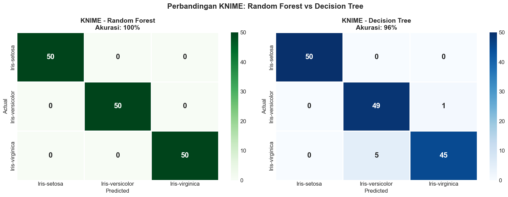
# Tabel perbandingan detail KNIME RF vs KNIME DT
comparison = pd.DataFrame({
'Metrik': ['TP Setosa', 'FP Setosa', 'TP Versicolor', 'FP Versicolor',
'TP Virginica', 'FP Virginica', 'Total Benar', 'Total Salah', 'Overall Accuracy'],
'KNIME Random Forest': [50, 0, 50, 0, 50, 0, 150, 0, '100%'],
'KNIME Decision Tree': [50, 0, 49, 5, 45, 1, 144, 6, '96%']
})
print('='*70)
print('PERBANDINGAN KNIME: Random Forest vs Decision Tree')
print('='*70)
comparison
======================================================================
PERBANDINGAN KNIME: Random Forest vs Decision Tree
======================================================================
| Metrik | KNIME Random Forest | KNIME Decision Tree | |
|---|---|---|---|
| 0 | TP Setosa | 50 | 50 |
| 1 | FP Setosa | 0 | 0 |
| 2 | TP Versicolor | 50 | 49 |
| 3 | FP Versicolor | 0 | 5 |
| 4 | TP Virginica | 50 | 45 |
| 5 | FP Virginica | 0 | 1 |
| 6 | Total Benar | 150 | 144 |
| 7 | Total Salah | 0 | 6 |
| 8 | Overall Accuracy | 100% | 96% |
Analisis Perbedaan#
Pada KNIME Decision Tree, terdapat 6 data yang salah prediksi:
1 data Iris-versicolor salah diprediksi sebagai Iris-virginica
5 data Iris-virginica salah diprediksi sebagai Iris-versicolor
Kesalahan ini terjadi karena Iris-versicolor dan Iris-virginica memiliki karakteristik yang mirip, terutama pada fitur petal_length dan petal_width.
Sebaliknya, KNIME Random Forest berhasil mengklasifikasikan semua 150 data dengan benar (akurasi 100%). Hal ini menunjukkan keunggulan metode ensemble yang menggabungkan banyak tree untuk mengurangi kesalahan prediksi.
Visualisasi Perbandingan Akurasi KNIME#
methods = ['KNIME\nRandom Forest', 'KNIME\nPython Script', 'KNIME\nDecision Tree']
accs = [100.0, 100.0, 96.0]
colors_bar = ['#2ecc71', '#27ae60', '#3498db']
fig, ax = plt.subplots(figsize=(10, 6))
bars = ax.bar(methods, accs, color=colors_bar, edgecolor='white', linewidth=2, width=0.5)
ax.set_ylabel('Akurasi (%)', fontweight='bold')
ax.set_title('Perbandingan Akurasi KNIME:\nRandom Forest vs Decision Tree',
fontsize=14, fontweight='bold')
ax.set_ylim(90, 103)
for bar, acc in zip(bars, accs):
ax.text(bar.get_x()+bar.get_width()/2, bar.get_height()+0.3,
f'{acc:.1f}%', ha='center', fontweight='bold', fontsize=14)
plt.tight_layout(); plt.show()
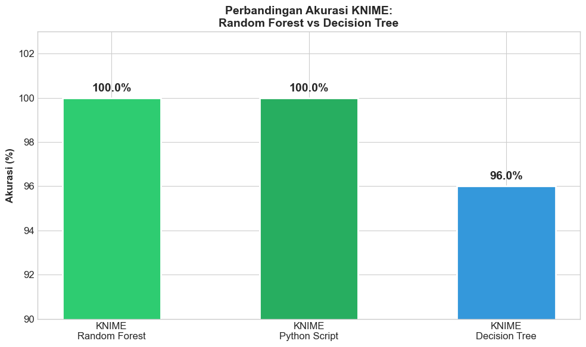
9. Kesimpulan#
Perbandingan KNIME: Random Forest vs Decision Tree pada Dataset IRIS#
Aspek |
Random Forest (KNIME) |
Decision Tree (KNIME) |
|---|---|---|
Overall Accuracy |
100% |
96% |
Data Salah Prediksi |
0 |
6 |
Akurasi Setosa |
100% |
100% |
Akurasi Versicolor |
100% |
98% (Recall) |
Akurasi Virginica |
100% |
90% (Recall) |
Overfitting |
Lebih tahan |
Rentan |
Interpretability |
Rendah (black box) |
Tinggi (white box) |
Jumlah Model |
Ensemble (banyak tree) |
Single tree |
Temuan Utama:#
Random Forest (KNIME) mencapai akurasi 100% - semua 150 data diklasifikasikan dengan benar
Decision Tree (KNIME) mencapai akurasi 96% - 6 data salah prediksi (antara Versicolor dan Virginica)
Python Script di KNIME juga mencapai akurasi 100%, konsisten dengan Random Forest Learner node
Random Forest lebih unggul dalam akurasi karena menggunakan ensemble method
Kelemahan Random Forest: model lebih sulit diinterpretasikan dibanding single Decision Tree
Rekomendasi: Untuk dataset IRIS, Random Forest adalah pilihan lebih baik dari segi akurasi. Namun, jika interpretabilitas menjadi prioritas, Decision Tree tetap valid dengan akurasi 96%.